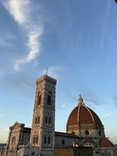
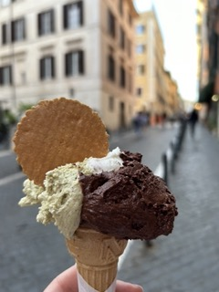

Ever thought about studying abroad? Here is my experience:
Ciao everyone! My name is Jess Schoenfeld, and I am a senior studying at Syracuse University. I recently studied abroad in Florence, Italy where I had some of the best 4 months of my life. There were some ups and some downs, but it was an amazing experience that I wouldn’t trade for the world. I had my fair share of mistakes and successes so I made this webpage so I could share some on my learning experiences with you all.
First let me tell you a little bit about my experience! I have been fortunate enough to have visited Europe a couple times before but let me tell you that does not prepare you for what you go through while you are there. You are literally living in a new country for months and really immersing yourself in their culture. Now I can only speak for Italy, but man was it a culture shock when we first got there. Everything is in a different language! I know that sounds like duh obvious, but it is scary at first. This isn’t a vacation where you are sheltered in a hotel you are living either with a host family or an apartment, etc. I remember my first-time walking into a coffee shop, I was mortified! But let me tell you it does get easier, and you will get used to it so cut yourself some slack and be respectful. Fortunately, most people in Florence speak English (that doesn’t mean you should try and learn the language). Florence itself was such a beautiful city. Everything there was so amazing; the architecture, history, food, shopping, the people, etc. it is the most perfect city (I may be bias).
Now the academics of study abroad are very important but am going to focus more on the fun part; food, things to do, and travel. I traveled to 9 different countries around Europe and a plethora of different cities in Italy itself. Click below to learn more about it! Traveling most weekends is exhausting and expensive but if you do it right, you can make your experience a lot easier.